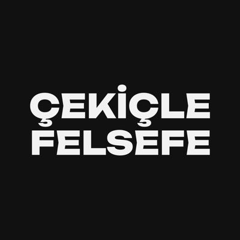

Psikanalitik Yönelimli Psikolog
Haktan Tay
Söylemin ardında ne var?
Özneyi dinlemek, onu söz içinde bulmaktır.
Analitik Dinleyiş
Sen ne söylüyorsun?
Ben ne duyuyorum.
Hakkımda
Söz, özneyi
var eder.
Psikanalitik yönelimli bir psikolog ve araştırmacıyım. Çalışmalarımın merkezinde özne, söylem ve arzu kavramları yer alıyor. Bu üç kavramın Jacques Lacan'ın kuramsal çerçevesinde nasıl iç içe geçtiğini hem klinik pratiğimde hem de akademik yazımda izliyorum.
Yalova Üniversitesi Psikoloji bölümünden Onur Derecesi ile mezun oldum. ODTÜ AYNA Klinik Psikoloji Birimi'nde psikanalitik oryantasyonlu klinik staj tamamladım. Lacanyen psikanaliz pratiğini hem Türkiye'de hem uluslararası arenada takip ediyorum.
"L'inconscient est structuré comme un langage."
— Jacques Lacan, ÉcritsÇekiçle Felsefe dergisinin genel yayın yönetmeniyim; Londra merkezli Psychology Times'ta psikoanaliz üzerine yazıyorum. 2026'da yayımlanan kitap bölümümde Lacan'ın bakış ve metonimi kavramlarıyla Frankenstein'ı okuyor, arzu ile yaratmanın sınır deneyimini inceliyorum.
"Toute parole appelle réponse."
— Jacques Lacan, Écrits
Yaklaşım
Lacanyen
Psikanaliz
Görüşme bir çözüm sunmaz — bir alan açar. Konuşmanın, sessizliğin ve anlam kaymaların içinde özne kendi arzusunun izini sürer. Analitik dinleyiş söylemin ötesinde neyin söylendiğine kulak verir.
Borromean
Düğüm
Lacan'ın kuramının yapıtaşında üç halka yatar: Gerçek (Réel), Sembolik (Symbolique) ve Hayali (Imaginaire). Bir Borromean düğümü gibi birbirini taşırlar — biri koparsa diğerleri de çözülür.
Klinik pratik bu üç boyuttaki kırılmaları dinler. Analist öznenin söylemine eşlik ederek simgesel düzenin dışarıda bıraktıklarını, gerçeğin izlerini tanır.
Sembolize edilemeyen, dil öncesi alan. Travma, tekrar eden semptomlar, yoğun heyecan — Gerçek simgeselin deliklerinden sızar. Klinik çalışma bu sızıntılarla nasıl yaşanacağını araştırır.
Dil, yasa, Büyük Başka. Özne sembolik düzenin içine doğar; anlamlayan zincirinde sürekli kayar. Söylem analizi bu kayışın izini sürerek öznenin arzu yapısını açığa çıkarır.
Ayna evresi, ego, tanıma ve yanlış tanıma. Analitik ilişki imge tuzağından çıkışın mümkün olduğu nadir alanlardandır — öznenin kendini farklı görebildiği bir an.
Süreç
Nasıl Çalışırım
Beklentilerinizi, sorularınızı ve geçmişinizi birlikte konuşuruz. Bu seans değerlendirme amaçlıdır; herhangi bir taahhüt gerektirmez.
Seans sıklığı, süre ve çalışma biçimi kararlaştırılır. Psikanalitik çerçeve, öznenin söyleminin özgürce açılabileceği bir alan yaratır.
Serbest çağrışım yöntemiyle bilinçdışına açılan kapıları keşfederiz. Her seans özgündür; yönlendiren danışan değil, söylemin kendisidir.
Psikanaliz, anlık çözümler değil kalıcı bir öznel dönüşüm hedefler. Söylemin içinde yeni bir pozisyon bulunur; bu süreç zaman alır, ama iz bırakır.
Hizmetler
Birlikte
Çalışalım
Bireysel Görüşme
Psikanalitik oryantasyonlu bireysel görüşmeler. Anlam arayışında olan, semptomlarıyla başa çıkmak isteyen, söylemin içinde kaybolan bireylerle çalışıyorum. Her görüşme öznenin kendi gerçeğiyle yüzleştiği özgün bir alan.
Süpervizyon
Psikanalitik yönelimli süpervizyon. Klinik vakalar üzerine analitik okumalar, kurumsal baskı altında analitik tutumun korunması. Türkçe, İngilizce ve Fransızca süpervizyon seçeneği mevcuttur.
Akademik Danışmanlık
Lacanyen söylem analizi, psikanalitik kuram ve nitel araştırma yöntemleri üzerine akademik danışmanlık. Tez çalışmaları, makale yazımı ve konferans sunumları için metodoloji ve teorik çerçeve desteği.
Deneyim
Klinik &
Akademik Yolculuk
Psikolojik test uygulama, klinik görüşme, vaka formülasyonu, psikopatoloji değerlendirmesi.
Nörogelişimsel bozukluklar, rehabilitasyon, nöropsikolojik test uygulama.
Komisyon faaliyetleri ve mesleki gelişim etkinliklerinin organizasyonu.
Akademik Çalışmalar
Yayınlar
Kaydır
Konferans &
Sunumlar
Dergi

Çekiçle
Felsefe
Felsefe, psikoloji, sosyoloji, sinema, politika ve edebiyatın kesiştiği bir dergi. Nietzsche'nin çekiciyle yapılan o ilk hamleden ilham alan Çekiçle Felsefe, düşünceyi yıkıp inşa etmeyi amaçlar.
cekiclefelsefe.com"Felsefe yapmak, kavramların altını oymak ve içlerindeki varsayımları gün ışığına çıkarmak demektir."
Le Stade du Miroir
Yansıman seninle hareket eder
ama hiçbir zaman tam sen değildir.
Sınırın iki yanını dene
Söylem Anlatısı
Öznenin Doğuşu
- 1 Önce bir nokta — dile düşmemiş bedensel varlık.
- 2 Dil onu kuşatır — gösterenin çemberi kapanır.
- 3 Çubuk düşer — özne bölünür.
- 4 İşte $ — konuşan, bilinçdışıyla yarık.
Lacanyen Notasyon
Mathèmeler
Lacan, kuramın özünü bir formüle indirgemek için cebirsel mathèmeler kullandı. Aşağıdakiler kliniğin ve yazımın iskeletini oluşturur.
Le fantasme — bölünmüş öznenin objet a ile kurduğu temel ilişki kalıbı.
Bir gösteren, bir başka gösteren için özneyi temsil eder. Anlam zincirde kayar.
Büyük Başka bütün değildir; kendi gösterenler dizisi içinde bir eksik taşır.
Arzunun nedeni-nesnesi — hiçbir zaman tam olarak yakalanamayan, kayan boşluk.
Dile girmiş, bölünmüş özne — söylediği ile demek istediği arasındaki yarıkta yaşar.
Eksiğin gösterileni; arzunun simgesel düzendeki belirleyicisi, organ değil işleyiş.
Lacan · Seminer XVII
Dört Söylem
Lacan dört söylem teorisinde aynı dört matheme'i — $, S1, S2, a — dört pozisyonda döndürür. Etken kim, Başka kim, hakikat ne, üretilen ne? Tıkla, çark dönsün.
Egemen gösteren (S1) bilgiye (S2) buyurur; özne ($) hakikat olarak gizlenir, geride objet a (artı-keyif) kalır. Tarihin söylemi.
Lacan · Écrits
Le Graphe du Désir
"Subversion du sujet" yazısında geliştirilen şema: öznenin söylem içindeki yolculuğu, gösteren zincirinin onu nasıl kestiği ve $'ın nasıl ortaya çıktığı. Bir düğümün üstüne gel.
Henüz dile düşmemiş, gösteren tarafından henüz kesilmemiş "ham" özne. Lacan'ın kurgusal başlangıç noktası — gerçek bir an değil, retroaktif olarak varsayılan bir konum.
Bir düğüme tıkla · sürükle
Kısa Sözlük
Kavramlar
Site boyunca geçen Lacan / Freud kavramlarının kısa karşılıkları. Üstüne tıkla, aç.
L'inconscientBilinçdışı
Lacan'a göre bilinçdışı bir dil gibi yapılanmıştır. Bastırılmış değil; söylenemeyen ile söylenen arasındaki kesimde işler.
$Çubuklu Özne
Dile girmiş, bölünmüş kişi. Söylediği ile demek istediği arasındaki yarıkta yaşar; bilinçdışı tam burada konuşur.
Le RéelGerçek
Sembolize edilemeyen, dile gelmeyen alan. Travmanın, anksiyetenin, tekrar eden semptomun sızdığı yer.
Le SymboliqueSembolik
Dil, yasa, Büyük Başka. Öznenin doğduğu ve kayan anlamlar zincirinde yer aldığı düzen.
L'ImaginaireHayali
Ayna evresi, ego, tanıma–yanlış tanıma. İmgesel düzen; "ben"in ortaya çıktığı yanılsamalı alan.
Objet petit aArzu Nesnesi
Hiçbir zaman tam olarak yakalanamayan, arzuyu hareket ettiren neden-nesne. Eksiğin etrafında döner.
Le DésirArzu
Talep ile ihtiyaç arasındaki kalan. Bir tatminin ardından bitmez; daima Başka'nın arzusuna doğru gider.
Le Grand Autre (A)Büyük Başka
Dilin ve yasanın yapı taşı; özneyi konuşurken kuran simgesel düzen. Bir kişi değil, bir konum.
JouissanceKeyif / Tatmin-ötesi
Hazzın sınırını aşan, acıyla iç içe geçen tatmin. Lacan'da semptom ile özne arasındaki bağ.
Le Stade du MiroirAyna Evresi
6–18 aylık çocuğun aynadaki imgesini "ben" diye tanıdığı an. Ego, baştan beri bir yanlış-tanımayla kurulur.
Randevu
Bir adım atmaya
hazır mısınız?
Psikanalitik yolculuk bir soruyla başlar. O soruyu birlikte bulmak için buradayım.
Seansa Başlaİletişim
Bir Söyleşi
Başlatalım.
Psikanalitik görüşme, süpervizyon veya akademik işbirliği hakkında bilgi almak için ulaşabilirsiniz. İlk görüşme ücretsizdir.